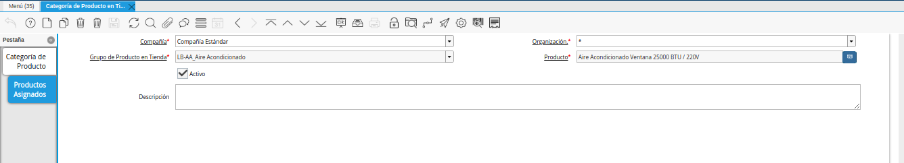
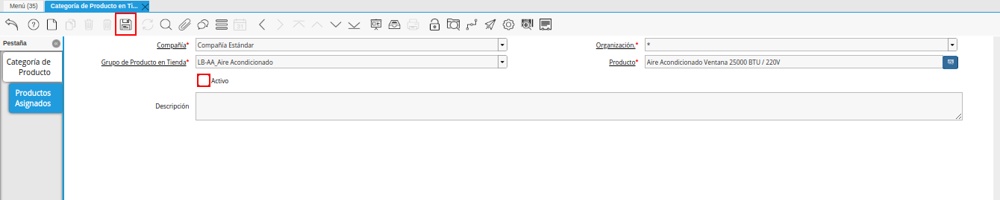
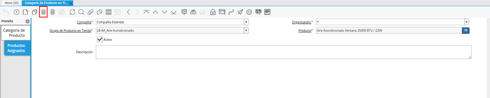

1.3. Eliminar o Inactivar Productos en ADempiere para el e-commerce¶
Para eliminar o inactivar un producto de una categoría, se deben aplicar los siguientes pasos:
1.3.1. Inactivar un Producto en una Categoría¶
Este caso puede ser aplicado cuando se desea inactivar un producto en una categoría pero no desea eliminarlo por que quiere que siga perteneciendo a esa categoría y más adelante desea activarlo, para aplicar este caso:
Ubicar en la ventana “Categoría de Producto en Tienda” la categoría hija o sub-hija (Grupo/Sub-Grupo) donde se encuentre el producto. Una vez ubicada la categoría, ir a la pestaña “Productos Asignados”.
Para ubicar en la pestaña “Productos Asignados” el producto que requiere inactivar, puede realizar cualquiera de las siguientes acciones:
Cambiar la vista a “Multiregistro”, seleccionando el icono “Cambiar mono/multi registro” ubicado en la barra de herramientas de ADempiere. Luego seleccionar el registro que requiere inactivar y volver a seleccionar dicho icono.
Utilizando la opción de búsqueda desde la barra de herramientas de ADempiere, con el criterio de búsqueda “Producto”.

Imagen 1. Registro del Producto en la Pestaña Productos Asignados
Una vez ubicado el producto se procede a destildar el check “Activo” y guardar los cambios realizados seleccionando el icono “Guardar Cambios”, el mismo se encuentra ubicado en la barra de herramientas de ADempiere.

Imagen 2. Check Activo
1.3.2. Eliminar un Producto en una Categoría¶
Este caso puede ser aplicado cuando se desea eliminar por completo un producto en una categoría, para aplicar este caso se debe hacer la búsqueda del producto:
Ubicar en la ventana “Categoría de Producto en Tienda” la categoría hija o sub-hija (Grupo/Sub-Grupo) donde se encuentre el producto. Una vez ubicada la categoría, ir a la pestaña “Productos Asignados”.
Para ubicar en la pestaña “Productos Asignados” el producto que requiere eliminar, puede realizar cualquiera de las siguientes acciones:
Cambiando la vista a “Multiregistro”, seleccionando el icono “Cambiar mono/multi registro” ubicado en la barra de herramientas de ADempiere. Luego seleccionar el registro que requiere eliminar y volver a seleccionar dicho icono.
Utilizando la opción de búsqueda desde la barra de herramientas de ADempiere, con el criterio de búsqueda “Producto”.
Imagen 3. Registro del Producto en la Pestaña Productos Asignados
Una vez ubicado el producto se procede a seleccionar el icono “Borrar Registro” ubicado en la barra de herramientas de ADempiere.

Imagen 4. Icono Borrar Registro